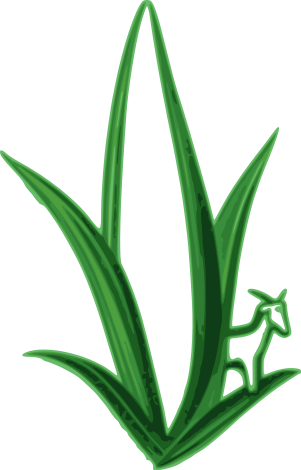
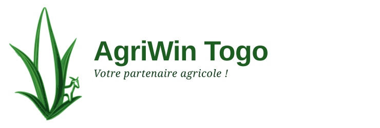
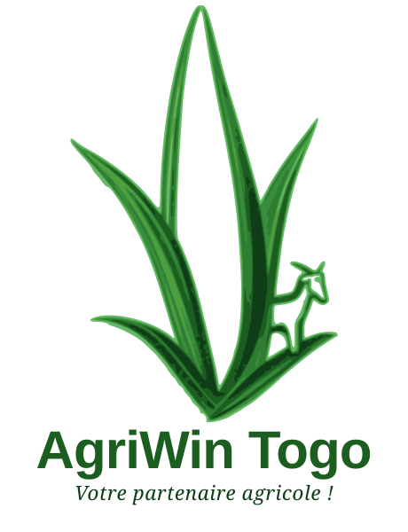
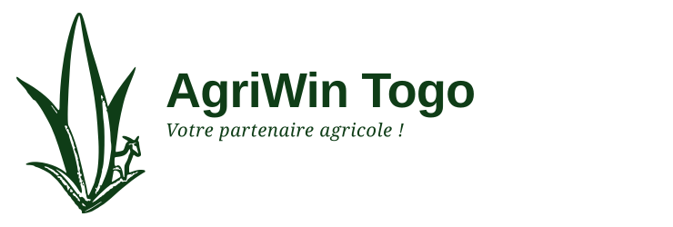
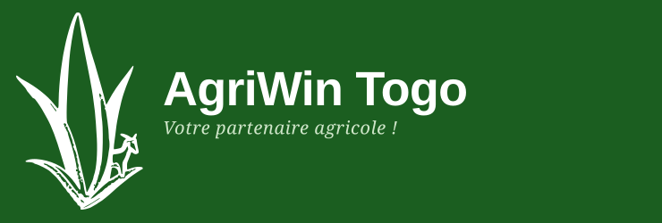
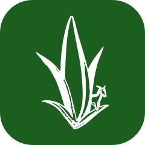

CATALOGUE
Manguier greffé Kent
3 500 F / plant
@agriwintogo

Votre partenaire agricole !
Identité, design system et règles d'application.
Kégué, Togo — expertise agricole, plants tropicaux, formation.

AgriWin Togo est une entreprise d'expertise et de prestation de services agricoles, de formation et d'écoulement de produits agricoles, spécialisée dans les plants tropicaux. Fondée en 2025, basée à Kégué.
Elle est née d'un constat simple : beaucoup de porteurs de projets agricoles manquent en même temps d'un accompagnement technique fiable, de plants de qualité et de débouchés pour leurs récoltes. AgriWin Togo répond aux trois dans une seule structure.
| Repère | Valeur |
|---|---|
| Raison sociale | AgriWin Togo |
| Signature | Votre partenaire agricole ! |
| Création | 2025 |
| Siège | Kégué, Togo |
| Dirigeant | KEGNON Emmanuel, fondateur & CEO |
| Métiers | Conseil · Formation · Pépinière · Écoulement · Élevage |
| Portée | Togo, Afrique de l'Ouest, international |
| Contact | +228 96 63 82 00 · agriwintogo@gmail.com |
| Horaires | Lun–Sam : 8h – 18h |
« Nous voulons que chaque client, qu'il soit à Kégué ou à l'international, reçoive des plants de qualité et un accompagnement dans lequel il peut avoir une confiance totale. »
KEGNON Emmanuel — Fondateur & CEO
Rendre l'expertise agricole, les plants de qualité et les débouchés commerciaux accessibles à tous les porteurs de projets, quelle que soit leur taille, au Togo et au-delà.
Devenir une référence ouest-africaine de l'accompagnement agricole intégré, reconnue pour la qualité de ses plants tropicaux et le sérieux de ses prestations.
Votre partenaire agricole !
Un partenaire, pas un fournisseur : quelqu'un qui reste après la livraison.
Quatre valeurs, dans cet ordre. Elles s'écrivent avec ces mots-là : chaque valeur est suivie de la preuve qui la rend vérifiable, sans quoi elle n'est qu'un mot.
Des engagements tenus, des délais respectés, un accompagnement suivi.
On annonce une date de livraison et on la tient — ou on prévient avant.
Des plants et des prestations sélectionnés selon des standards exigeants.
Un plant qui ne passe pas le contrôle ne quitte pas la pépinière.
Une équipe à l'écoute, disponible par téléphone et WhatsApp au quotidien.
Un numéro unique, une réponse le jour même en semaine.
Une clientèle locale et internationale, servie avec la même exigence.
Le particulier de Kégué et l'ONG internationale ont le même interlocuteur.
Ces quatre valeurs sont la liste complète. N'en ajoutez pas pour remplir une grille, et ne les reformulez pas d'un support à l'autre.
| Public | Ce qu'il vient chercher |
|---|---|
| Particuliers | Un jardin, un verger familial, quelques plants. Besoin : le bon plant et le bon conseil. |
| Petits producteurs | Une parcelle à planter ou à replanter. Besoin : volume, prix, calendrier. |
| Entreprises | Reboisement, aménagement, plantation industrielle. Besoin : prestation complète et facturation. |
| ONG et projets | Programmes agricoles et environnementaux. Besoin : traçabilité, formation, reporting. |
| Investisseurs internationaux | Projet agricole au Togo. Besoin : un partenaire local fiable sur place. |
Le ton d'AgriWin Togo est celui d'un technicien qui explique, pas d'un commercial qui vend. Français, vouvoiement, phrases courtes, présent de l'indicatif. Le client est « vous », l'entreprise est « nous ».
Un plant de sisal à six feuilles, et une chèvre à son pied. Les deux métiers d'AgriWin Togo — la culture et l'élevage — tiennent dans un seul signe, sans qu'aucun mot soit nécessaire.
Le signe n'a pas été redessiné : le logo d'origine a été vectorisé, puis ses valeurs ont été ramenées sur la palette de marque. Le plant, la chèvre et leurs proportions sont exactement ceux que l'entreprise utilise déjà.
| Élément | Règle |
|---|---|
| Origine | Logo fourni par AgriWin Togo, vectorisé en courbes de Bézier. |
| Structure | Six feuilles : deux hampes centrales presque verticales, deux latérales montantes, deux extérieures retombantes. |
| Proportions | Rapport largeur / hauteur de 0,64 — le signe est plus haut que large. |
| Modelé | Six valeurs de vert, de green-400 pour les nervures éclairées à green-950 pour les contours. |
| Chèvre | Dessin au trait à intérieur évidé, au pied de la feuille droite, environ un cinquième de la hauteur du signe. |
| Une seule encre | Silhouette pleine, contours d'origine repeints dans la couleur du fond : les feuilles restent séparées. |
| Fichier | SVG vectoriel, six couches superposées de la plus claire à la plus sombre. |
Le symbole est un fichier, pas un dessin à reproduire. Ne le redessinez pas : prenez le SVG dans le groupe Logos du design system.




L'unité x est la hauteur de la hampe centrale divisée par quatre. Cette marge est libre sur les quatre côtés : aucun texte, aucun filet, aucune image, aucun bord de page n'y entre.
| Variante | Taille minimale |
|---|---|
| Horizontal — impression | 28 mm de large |
| Horizontal — écran | 120 px de large |
| Principal vertical — impression | 22 mm de large |
| Principal vertical — écran | 96 px de large |
| Symbole seul — écran | 32 px |
| Monogramme — favicon | 16, 32 et 180 px |
La chèvre et les nervures se referment et le signe devient une tache. Passez alors au monogramme, qui est dessiné pour cette échelle.
Huit façons d'abîmer la marque. Chacune s'est déjà produite quelque part : la liste est là pour qu'elle ne se produise pas ici.
Neuf verts, du plus sombre au plus clair. Le vert est la couleur de la marque : sur une page, il occupe l'essentiel de la surface colorée.
L'or vient de la terre et de la récolte. Il ponctue : sur une page, il ne dépasse pas un dixième de la surface colorée. Une seule action or par écran visible.
gold-700 est un ajout de ce système. L'or du site (gold-600) ne donne que 2.94:1 sur blanc : il ne pouvait pas porter de texte. gold-700 (#9A6412) atteint 4.99:1 et reprend tous les usages textuels de l'or.
ink-300 est déjà semi-transparent dans la source du site (#8A938890, soit 56 % d'opacité) : c'est volontaire, il sert aux séparateurs et au texte désactivé, jamais au texte lu.
| Association | Aperçu | Texte | Fond | Ratio | Niveau |
|---|---|---|---|---|---|
| Texte courant sur fond blanc | Aa | ink-900 | white | 16.05:1 | AA |
| Paragraphe sur fond blanc | Aa | ink-700 | white | 10.84:1 | AA |
| Texte secondaire sur fond blanc | Aa | ink-500 | white | 5.99:1 | AA |
| Paragraphe sur fond doux | Aa | ink-700 | bg-soft | 10.29:1 | AA |
| Titre sur fond blanc | Aa | green-950 | white | 12.35:1 | AA |
| Titre sur fond doux | Aa | green-950 | bg-soft | 11.73:1 | AA |
| Lien et bouton vert sur blanc | Aa | green-700 | white | 5.13:1 | AA |
| Surtitre vert sur pastille claire | Aa | green-900 | green-100 | 6.83:1 | AA |
| Blanc sur vert principal | Aa | white | green-900 | 7.87:1 | AA |
| Blanc sur vert d'action | Aa | white | green-700 | 5.13:1 | AA |
| Blanc sur encre de marque | Aa | white | green-950 | 12.35:1 | AA |
| Texte du bouton or | Aa | green-950 | gold-500 | 5.79:1 | AA |
| Texte du bouton or au survol | Aa | green-950 | gold-400 | 6.79:1 | AA |
| Accent or sur fond blanc | Aa | gold-700 | white | 4.99:1 | AA |
| Accent or sur fond doux | Aa | gold-700 | bg-soft | 4.74:1 | AA |
| Or clair sur vert principal (grand texte uniquement) | Aa | gold-400 | green-900 | 4.33:1 | AA grand texte |
| Or principal sur encre de marque | Aa | gold-500 | green-950 | 5.79:1 | AA |
| Contour de bouton vert sur blanc | Aa | green-700 | white | 5.13:1 | AA composant |
| Blanc sur vert de survol | Aa | white | green-600 | 4.12:1 | AA composant |
| Combinaison du site | Mesure | Correctif |
|---|---|---|
| Or #C98A2B sur fond blanc | 2.94:1 | Utiliser --gold-700 (#9A6412) pour tout texte or sur fond clair ; --gold-600 reste réservé aux aplats et filets épais. |
| Vert d'action #2E7D32 sur pastille #E5F3E1 | 4.45:1 | Le surtitre en pastille passe à --green-900 (#1B5E20) : 6.83:1. |
Seuils appliqués : WCAG 2.1 AA — 4.5:1 pour le texte courant, 3:1 à partir de 24 px, en gras à partir de 19 px, et pour tout élément d'interface porteur de sens. Chaque ratio de ce tableau est recalculé à la génération du document.
Titres, surtitres, boutons, navigation, chiffres.
ABCDEFGHIJKLMNOPQRSTUVWXYZ
abcdefghijklmnopqrstuvwxyz
0123456789 àéèêçùôî ! ? &
Graisses utilisées : 500 · 600 · 700 · 800
Texte courant, formulaires, tableaux, légendes.
ABCDEFGHIJKLMNOPQRSTUVWXYZ
abcdefghijklmnopqrstuvwxyz
0123456789 àéèêçùôî ! ? &
Graisses utilisées : 400 · 500 · 600
Un à trois mots d'accent, et la signature de marque. Rien d'autre.
ABCDEFGHIJKLMNOPQRSTUVWXYZ
abcdefghijklmnopqrstuvwxyz
0123456789 àéèêçùôî ! ? &
Graisses utilisées : 500 · 600 — italique uniquement
Dix styles nommés couvrent tous les supports. Les tailles de titre sont fluides : la valeur indiquée est le maximum, la borne basse s'applique sur mobile.
| Style | Aperçu | Taille | Graisse | Interligne | Police | Usage |
|---|---|---|---|---|---|---|
| Display | AgriWin Togo | clamp(34px, 5vw, 56px) | 800 | 1.08 | Poppins | Titre de couverture, hero |
| H1 | AgriWin Togo | clamp(30px, 4.2vw, 44px) | 800 | 1.12 | Poppins | Titre de page |
| H2 | AgriWin Togo | clamp(26px, 3.4vw, 38px) | 700 | 1.2 | Poppins | Titre de section |
| H3 | AgriWin Togo | 22px | 600 | 1.3 | Poppins | Titre de carte |
| Surtitre | AgriWin Togo | 13px | 600 | 1.4 | Poppins | Pastille de section, majuscules, interlettrage 0.08em |
| Corps | AgriWin Togo | 16px | 400 | 1.6 | Inter | Texte courant |
| Corps large | AgriWin Togo | 18px | 400 | 1.6 | Inter | Chapô, accroche de section |
| Petit | AgriWin Togo | 14px | 400 | 1.5 | Inter | Légendes, mentions, pied de page |
| Bouton | AgriWin Togo | 15px | 600 | 1 | Poppins | Libellé de bouton |
| Accroche | AgriWin Togo | clamp(20px, 2.4vw, 30px) | 500 | 1.35 | Playfair Display Italic | Mot mis en valeur dans un titre, citation |
Un à trois mots dans un titre de section, en italique gold-700. Un seul par page. Un paragraphe entier en Playfair est une faute.
Conseil, formation, pépinière et écoulement des récoltes : une seule structure pour les quatre besoins d'un projet agricole.
Décrivez-nous votre besoin : nos experts vous répondent avec un devis clair.
Manguiers, avocatiers, cocotiers, agrumes, teck, moringa — chaque plant est contrôlé avant de quitter la pépinière de Kégué.
| Paramètre | Valeur |
|---|---|
| Grille | 24 × 24, marge optique de 2 unités |
| Trait | 2 unités, jamais de remplissage |
| Extrémités | Arrondies (round cap et round join) |
| Couleur | Héritée du texte voisin (currentColor) |
| Angles | Rayon minimal de 2 unités ; pas d'angle vif |
Ces douze tracés sont ceux du site AgriWin Togo. Pour un besoin nouveau, dessinez dans la même grille plutôt que d'importer un autre jeu d'icônes. Un pictogramme ne remplace jamais un libellé : il l'accompagne.
| Paramètre | Règle |
|---|---|
| Lumière | Naturelle, tôt le matin ou en fin d'après-midi. Pas de flash direct. |
| Hauteur | À hauteur d'homme, ou à hauteur de plant pour la pépinière. |
| Profondeur | Un sujet net, un arrière-plan doux — jamais tout net. |
| Verts | Les verts de l'image doivent pouvoir voisiner green-700 sans jurer. |
| Format | 3:2 pour les bandeaux, 4:3 pour les cartes, 1:1 pour le social. |
Sur toute photo qui porte du texte, posez ce dégradé du haut vers le bas. C'est lui qui garantit la lisibilité du titre blanc, quelle que soit l'image.
AgriWin Togo accompagne particuliers, entreprises et ONG.
linear-gradient(180deg, rgba(15,61,23,.55), rgba(15,61,23,.82))
— soit green-950 à 55 % puis 82 %.
Tant que les photos de la pépinière et de l'équipe ne sont pas disponibles, les images d'ambiance portent une mention explicite sous le bloc. Retirez la mention en même temps que l'image.
Quatre rayons, pas un de plus. Un rayon choisi hors de cette liste se voit immédiatement dans une grille de cartes.
Les trois ombres sont teintées de green-950 (15, 61, 23) : une ombre grise neutre fait sale sur les fonds verts.
| Paramètre | Valeur |
|---|---|
| Durée | 0,15 s pour un bouton, 0,2 s pour une carte, 0,4 s pour une image |
| Courbe | ease — pas de rebond, pas d'élastique |
| Carte au survol | Monte de 5 px et prend shadow-md |
| Bouton au clic | Se comprime à 97 % |
| Flèche de lien | Avance de 4 px |
Quatorze composants couvrent l'ensemble du site AgriWin Togo. Chacun est documenté dans le design system, avec ses propriétés, ses états et un aperçu vivant.
Les composants vivent dans le design system, pas dans ce document : c'est là qu'ils sont à jour, avec leur code et leurs règles d'usage.
| Support | Dimensions |
|---|---|
| Avatar | 512 × 512 px — monogramme |
| Couverture Facebook | 1640 × 624 px — version inversée |
| Publication carrée | 1080 × 1080 px |
| Story / TikTok | 1080 × 1920 px |
| Bannière de site | 1920 × 1280 px, voile vert obligatoire |
| Favicon | 16, 32 et 180 px — monogramme |
La source de vérité est le design system AgriWin Togo, publié comme artefact sur claude.ai. Il contient les 33 tokens, les 14 composants avec leurs aperçus vivants, et les six fichiers de logo en SVG.
Ce brand book est une photographie de ce système à un instant donné. En cas de divergence, le design system fait foi.
| Élément | Emplacement |
|---|---|
| Tokens | tokens.json — couleurs, typographie, espacement, rayons, ombres |
| Composants | 14 fiches, chacune avec propriétés, états et aperçu |
| Logos | 6 fichiers SVG dans le groupe d'assets Logos |
| Règles d'écriture | README du design system |
| Décision | Qui |
|---|---|
| Nom, signature, valeurs | Direction — aucune modification sans décision formelle |
| Logo et déclinaisons | Direction, sur proposition du responsable communication |
| Palette et typographie | Responsable communication, dans les limites de ce document |
| Nouveau composant | Responsable communication + intégrateur, ajouté au design system |
| Supports courants | Toute personne, en appliquant ce document |